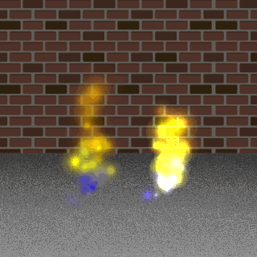
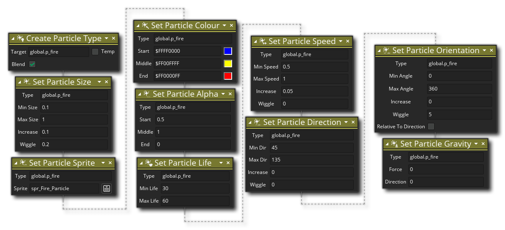

Descripción
En sus proyectos, puede tener múltiples tipos de partículas diferentes, cada una con sus propias propiedades, como dirección y color, etc., que se establecen utilizando las diferentes acciones de tipo de partículas. Sin embargo, primero necesita crear un tipo de partícula usando esta acción, que esencialmente asigna una pequeña cantidad de memoria para contener todos los detalles de la partícula, de modo que pueda usar las partículas en cualquier momento en el futuro. Le da una variable para mantener el valor único de ID para el tipo de partícula, y luego en todas las acciones futuras relacionadas con esta partícula puede llamar a la variable. Puede elegir marcar esta variable como una variable local temporal, pero eso significará que se descarta al final de la secuencia de comandos de acción o evento, lo que significa que el tipo de partícula seguirá existiendo, pero le dejará sin medios para acceder a ella, así que se debe tener cuidado al usar esto (en general, los tipos de partículas nunca tendrán que almacenarse en una variable local temporal, pero para ciertas cosas, como extraer partículas a una superficie, puede ser necesario).
NOTA: Un tipo de partícula, una vez creada, permanece residente en la memoria del sistema durante todo el juego, por lo que si necesita recrearla en cualquier punto (por ejemplo, si llama a la acción Restart Game ), debe destruir el tipo de partícula actual; de lo contrario, se produce una pérdida de memoria. Esto sucede cuando un recurso se agrega a la memoria y luego se "desreferencia", lo que significa que GameMaker Studio 2 ya no tiene forma de interactuar con ese recurso. Esto lleva a que la memoria esté obstruida por recursos inaccesibles que a su vez pueden causar problemas con su juego. Para destruir un tipo de partícula cuando ya no sea necesario, use la acción Destruir el tipo de partícula.
También puede establecer el modo de fusión que se utilizará para las partículas. Por defecto se dibujarán con un modo de fusión "normal", por lo que los colores no se modificarán por lo que se dibujó debajo de la partícula; sin embargo, con la mezcla marcada, se dibujarán utilizando una mezcla aditiva, lo que significa que las cosas se dibujarán con cambios a los colores basados en lo que se dibujó debajo de la partícula. La combinación de aditivos proporciona efectos muy brillantes y "brillantes", y es ideal para exfoliaciones, láser, fuego, etc., mientras que la mezcla normal es mejor para cosas como lluvia, humo o efectos de escombros. La imagen a continuación muestra el mismo efecto con additive on y additive off:

Sintaxis de acción:

Argumentos:
Argumento Descripción Target La variable de destino para mantener el valor de ID de tipo devuelto
Ejemplo:
El código de bloque de acción anterior creará un nuevo tipo de partícula y asignará su valor único de ID a una variable global. Luego procede a establecer todas las propiedades para el tipo de partícula.